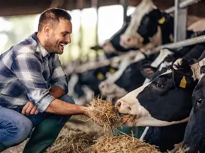
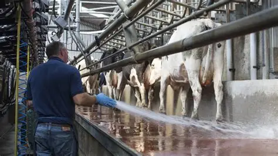

Thoughtful routines, every single day.

Start with observation and gentle attention.
Each day begins with routine health checks and feeding, followed by shelter cleaning and fresh water. Cows are given suitable movement and grooming, while their behaviour, appetite, and overall condition are observed regularly to identify any health concerns early.
- Daily visual health and comfort checks
- Routine feeding and fresh-water checks
- Clean resting areas and safe movement

Fresh water and suitable nourishment.
Cows are provided with a balanced diet that may include green fodder, dry fodder, grains, and clean drinking water. Feed quantities and dietary needs are adjusted according to each cow’s age, health, and condition, with professional veterinary or nutritional guidance when required.
- Fresh drinking water accessible throughout the day
- Green fodder and appropriate feed as available
- Special diets or additional nutrition where advised

Health support with clear escalation.
Regular health check-ups are carried out with the support of qualified veterinary professionals. Vaccinations and treatments are properly recorded, while the cows are continuously monitored for signs of illness, injury, or other health concerns.
- Regular veterinary checkups
- Vaccination and treatment according to professional advice
- Observation and documentation of health changes

Clean surroundings support comfort.
- Routine shelter and feeding-area cleaning
- Clean drinking water areas
- Responsible waste and manure management

Extra attention when an animal needs it most.
Sick, injured, elderly, or rescued cows are carefully separated from the main herd and assessed based on their condition. They receive appropriate food, rest, medicines, and daily care, while serious or complicated cases are referred to qualified veterinarians for professional treatment and follow-up.
- Closer observation and comfort measures
- Appropriate treatment and recovery support
- Individual attention for vulnerable animals